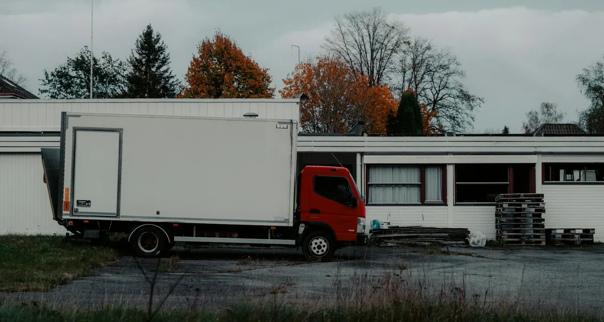

Tractomulas
Tractomula
Tractocamión con semirremolque para despachos completos y carga de mayor peso entre ciudades.
Capacidad: por confirmar
Flota propia y tercerizada de turbos, camiones sencillos y tractomulas. Filtre por tipo de vehículo.
Confirmados por la empresa: turbos, camiones sencillos y tractomulas (flota propia y tercerizada). Plataformas, camas bajas y remolques especializados están por confirmar y no aparecen al publicar. Faltan cantidades y capacidades. La foto del turbo es de Unsplash; las demás son de referencia.
Tractomulas
Tractocamión con semirremolque para despachos completos y carga de mayor peso entre ciudades.
Capacidad: por confirmar

Tractomulas
Configuración cerrada para mercancía seca que debe viajar protegida de la lluvia y del polvo.
Capacidad: por confirmar

Camiones sencillos
Camión rígido de dos ejes para cargas medianas en trayectos urbanos y entre ciudades.
Capacidad: por confirmar

Camiones turbo
Camión liviano para despachos pequeños, entregas urbanas y acceso a zonas con restricciones para vehículos grandes.
Capacidad: por confirmar

Plataformas
Semirremolque abierto para estructuras, tubería, materiales y carga que se sube con grúa o montacargas.
Capacidad: por confirmar

Camas bajas
Remolque de piso bajo para maquinaria amarilla y equipos altos que no caben en una plataforma convencional.
Capacidad: por confirmar

Camas bajas
Para equipos de mayor peso, con más ejes para repartir la carga sobre la vía.
Capacidad: por confirmar

Remolques especializados
Remolque de ejes múltiples para cargas sobredimensionadas de gran peso o gran longitud.
Capacidad: por confirmar

Remolques especializados
Remolque que se alarga para piezas de gran longitud, con ejes traseros direccionales.
Capacidad: por confirmar
Nuestros vehículos tienen rastreo satelital las 24 horas, los 7 días de la semana, durante todo el trayecto.
Su carga viaja amparada por pólizas de seguro de mercancía.
Conductores preparados para el manejo seguro de la carga y la operación en carretera.
Turbos, camiones sencillos y tractomulas para ajustarnos al tamaño de cada despacho.
Cuéntenos el peso y las medidas de su carga y le indicamos la configuración adecuada.